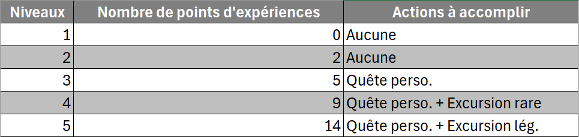

CRÉATION DE VOTRE PERSONNAGE
Suivez ces étapes pour créer votre personnage :
- Téléchargez votre fiche de personnage : Lien de téléchargement
- Choisissez une race et inscrivez-la sur votre fiche, ainsi que ses atouts.
- Choisissez une classe et sélectionnez une des 4 compétences disponibles au niveau 1.
- Choisissez un métier et sélectionnez une des 4 compétences disponibles au niveau 1. Ajoutez également la compétence gratuite de votre métier. Vous ne pouvez choisir qu'une compétence par palier de niveau.
- Inscrivez votre nom ainsi que celui de votre personnage.
PROGRESSION & EXPÉRIENCE (XP)
1 GN = 1 XP
Vous devez choisir entre améliorer votre métier ou votre classe. L’XP peut être dépensé dans n’importe quel arbre de compétences, mais ne permet pas d’en gagner davantage. De nombreux arbres supplémentaires sont disponibles en jeu !
À partir du niveau 3
L’XP seul ne suffit plus pour monter de niveau. Vous devrez accomplir certaines actions (exemple : sacrifier des objets). Détails supplémentaires à découvrir en jeu !
SYSTÈME D’ÉVOLUTION DES COMPAGNONS
Les compagnons montent de niveau différemment des joueurs :
- Pour progresser, ils doivent consommer des objets magiques en apparence de nourriture, qui seront ensuite détruits.
- Au niveau 5, un compagnon évolue et peut choisir soit un métier, soit une classe.
- Il pourra ensuite utiliser l’XP accumulé pour progresser dans son nouvel arbre de compétences.
Prêt à entrer dans l’aventure ?
Personnalisez votre personnage et découvrez toutes les possibilités qui s’offrent à vous !